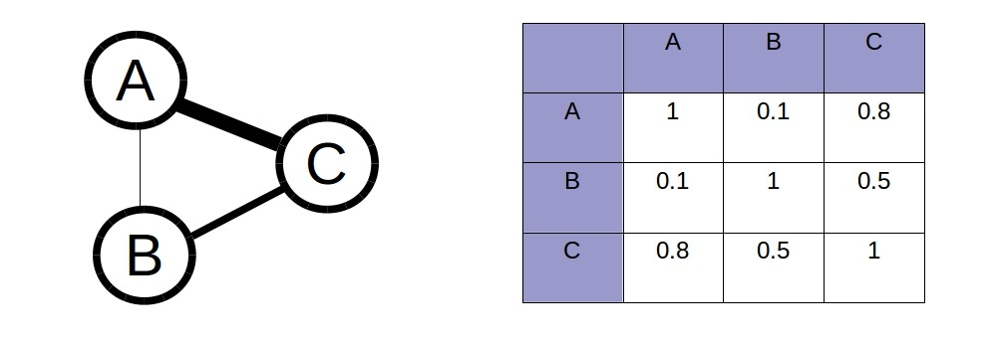

Machine Learning
Javascript
- Overview of open source libraries
- Recommend textual content
Open source libs
- Natural
- ConvNetJS
- (statistics libs)
- ???
var natural = require('natural'),
classifier = new natural.BayesClassifier();
classifier.addDocument('my unit-tests failed.', 'software');
classifier.addDocument('tried the program, but it was buggy.', 'software');
classifier.addDocument('the drive has a 2TB capacity.', 'hardware');
classifier.addDocument('i need a new power supply.', 'hardware');
classifier.train();
classifier.save('classifier.json', function(err, classifier) {
// the classifier is saved to the classifier.json file!
natural.BayesClassifier.load('classifier.json', null, function(err, classifier) {
console.log(classifier.classify('did you buy a new drive?'));
});
});
"The Deep Learning Conspiracy"
{kind=link}
Takeaway
- Algorithm vs. Model
- Javascript is good to run the Model
Let's write a model
- Data gathering and cleaning
- Algorithm choice
- Model training
- Recommend
Get data
Italian food
SELECT DISTINCT ?id ?label ?content WHERE {
?id a dbo:Food .
?id dbo:origin dbr:Italy .
?id dbo:abstract ?content .
?id rdfs:label ?label .
FILTER(LANG(?label) = "en")
FILTER(LANG(?content) = "en")
} LIMIT 10000
Algorithm
Jaccard/Tanimoto index

Algorithm
Jaccard/Tanimoto index
function similarity( bagA, bagB ) {
var nIntersection = _.intersection( bagA, bagB).length;
var nUnion = _.union( bagA, bagB ).length;
return nIntersection / nUnion;
};
Similarity graph

var similarityGraph = {
"A":{
"B": 0.1,
"C": 0.8,
},
"B":{
"A": 0.1,
"C": 0.5,
},
"C":{
"A": 0.8,
"B": 0.5,
}
};